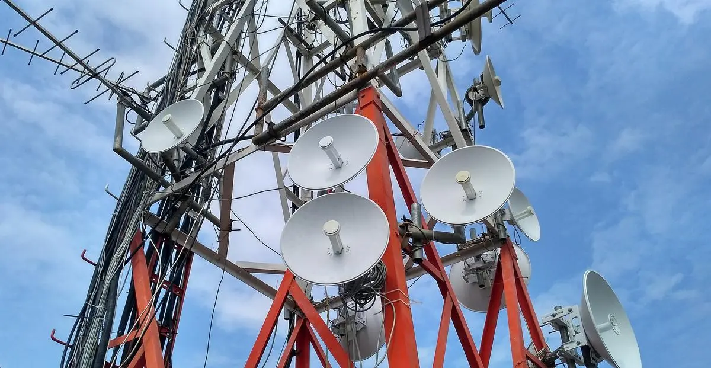

Apa itu Teknik Telekomunikasi ?
Teknik Telekomunikasi adalah bidang yang berkaitan dengan transmisi, penerimaan, dan pengolahan informasi melalui berbagai media. Di era digital saat ini, telekomunikasi menjadi tulang punggung komunikasi global, memungkinkan konektivitas yang cepat dan efisien. Perkembangan teknologi seperti jaringan 5G, kecerdasan buatan (AI), dan Internet of Things (IoT) semakin meningkatkan peran Teknik Telekomunikasi dalam kehidupan sehari-hari.
Teknik Telekomunikasi mencakup berbagai aspek, termasuk sistem komunikasi nirkabel, jaringan komputer, transmisi optik, dan teknologi satelit. Disiplin ini menggabungkan prinsip-prinsip teknik elektro, pemrograman, dan jaringan untuk mengembangkan solusi komunikasi modern. Teknologi komunikasi mencakup berbagai sistem mulai dari telepon seluler, radio, televisi digital, hingga komunikasi data berbasis satelit.
Transmisi Sinyal merupakan roses pengiriman data melalui berbagai media seperti kabel serat optik, gelombang radio, atau satelit. Modulasi dan Demodulasi adalah teknik untuk mengubah sinyal agar dapat dikirimkan melalui medium komunikasi tertentu. Jaringan Telekomunikasi adalah Infrastruktur yang memungkinkan pengiriman dan penerimaan data dalam skala besar. Keamanan dan Enkripsi merupakan Langkah-langkah untuk melindungi informasi yang dikirimkan dari ancaman pihak yang tidak berwenang.
- Jaringan Seluler dan Internet - Teknologi seperti 4G dan 5G meningkatkan kecepatan dan kualitas komunikasi data.
- IoT (Internet of Things) - Memungkinkan perangkat saling terhubung untuk otomatisasi dan efisiensi.
- Keamanan Informasi - Mengembangkan sistem enkripsi untuk melindungi data dari ancaman siber.
Teknik Telekomunikasi terus berkembang dan beradaptasi dengan kebutuhan zaman. Lulusan bidang ini memiliki peluang karir yang luas di industri telekomunikasi, pengembangan perangkat lunak, dan keamanan jaringan. Dengan meningkatnya ketergantungan pada teknologi komunikasi, bidang ini akan terus menjadi salah satu sektor yang paling penting dalam dunia modern.